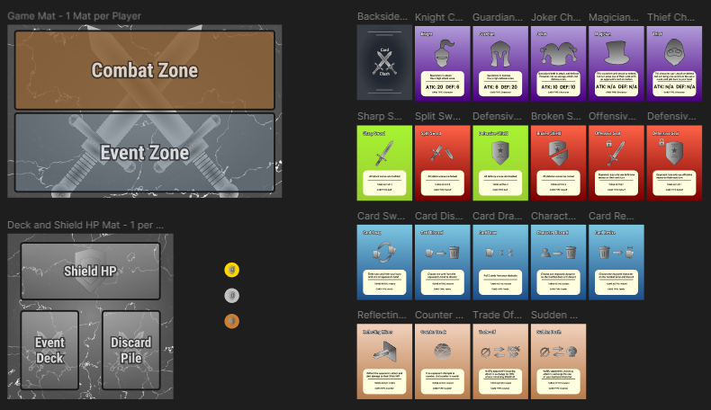
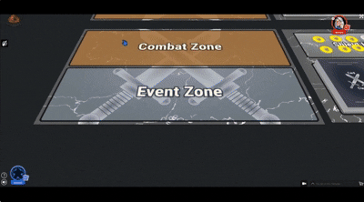
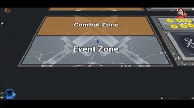
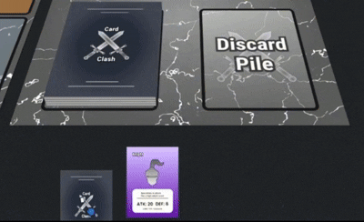
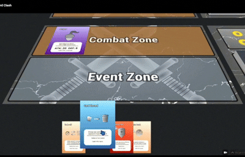

Card Clash


Card Clash is a personal card game that is developed on the digital platform Tabletopia. In this two player game, players must dominate their opponents completely by strategizing and bringing out their inner beast to cause chaos in the battle arena! Become a commander to lead the team to a complete victory by taking time to strategize and understand the situation before making your move.
• Solo Project
• Role: Game Designer
• Built in Tabletopia / Figma
• 3 Week Development

In the first step in the pre-production phase, I documented my initial gameplay ideas and mechanics to help organize my thoughts before going into the actual development. This involved planning out game objectives such as card, board layouts and components that needed to be used. Also writing initial ideas for different card types and its effects were a important part of brainstorming.
Writing down these concepts and ideas helped me explore various gameplay possibilities while gradually clarifying and developing them further in the later stages of the design process.


One of the biggest challenges of the project during the pre-production stage was to design a game that could be made within very limited resources. As the project had specific constraints regarding costs, it was important for me to think about the materials and components that could be made within those constraints and yet provide an interesting gameplay experience.
In order to gain a better understanding of the realistic costs of production, I used The Game Crafter's component catalog to research the costs of common components for tabletop games to select and choose ones that would best fit for the prototype.

The visual components for Card Clash were all designed in Figma with a focus on readability and gameplay clarity. Cards, game mats, and tokens use consistent color coding, iconography, and organized layouts to help players quickly understand mechanics and interactions during gameplay for a better game experience.

Character cards were created to support strategic gameplay within the combat zone. Each character features unique abilities and different stat distributions, encouraging players to adapt their strategies around varying combat strengths, weaknesses, and gameplay roles. Having several character roles makes the game more strategy-based by balancing offensive and defensive playstyles during matches.

Non-character cards were created to add variety and unpredictability to gameplay through the event zone. These cards include different categories such as buffs, debuffs, tactics, and counters, each with unique effects that can influence combat flow, player decisions, and overall match progression. Their abilities encourage players to react strategically and adapt to changing situations throughout the game.
One of the core gameplay focuses in Card Clash is strategic decision-making through card-based actions and hand management. Players use command cards to deploy characters, activate abilities, and respond to changing situations during matches, with each card providing different tactical advantages depending on timing and game state. Simultaneous action selection also encourages players to predict opponent decisions while planning their own strategies, creating a more dynamic and competitive gameplay experience.

One of the gameplay systems that was iterated on throughout the development of Card Clash involved what would happen once all cards in a player’s deck had been used while the match was still active. During playtesting, it became clear that there was no defined rule for continuing gameplay after the deck pile was emptied, which could lead to unfinished matches or confusion among players. To solve this issue, a deck recycling mechanic was added where players shuffle their discard pile back into the deck once no cards remain. This allowed matches to continue naturally while also introducing additional unpredictability through randomized card order after reshuffling.
All visual assets and game components for Card Clash were created digitally to streamline prototyping and iteration throughout development. The game was made available digitally through Tabletopia for online playtesting, while the original Figma files also allowed the project to be easily printed and assembled for physical playtesting and print-and-play use.

A complete rulebook was developed to improve player understanding and accessibility during gameplay. The rulebook organized gameplay mechanics, card interactions, turn structure, and win conditions into a clear format so new players could learn the game more efficiently while reducing confusion during playtesting sessions.
Card Clash is available both as a Print-and-Play Download for physical gameplay and as a Digital Version on Tabletopia for online play.
The Rulebook is also available Here.
©2024 by Shion Lovelace.
All content, logos, and trademarks are the property of their respective owners.